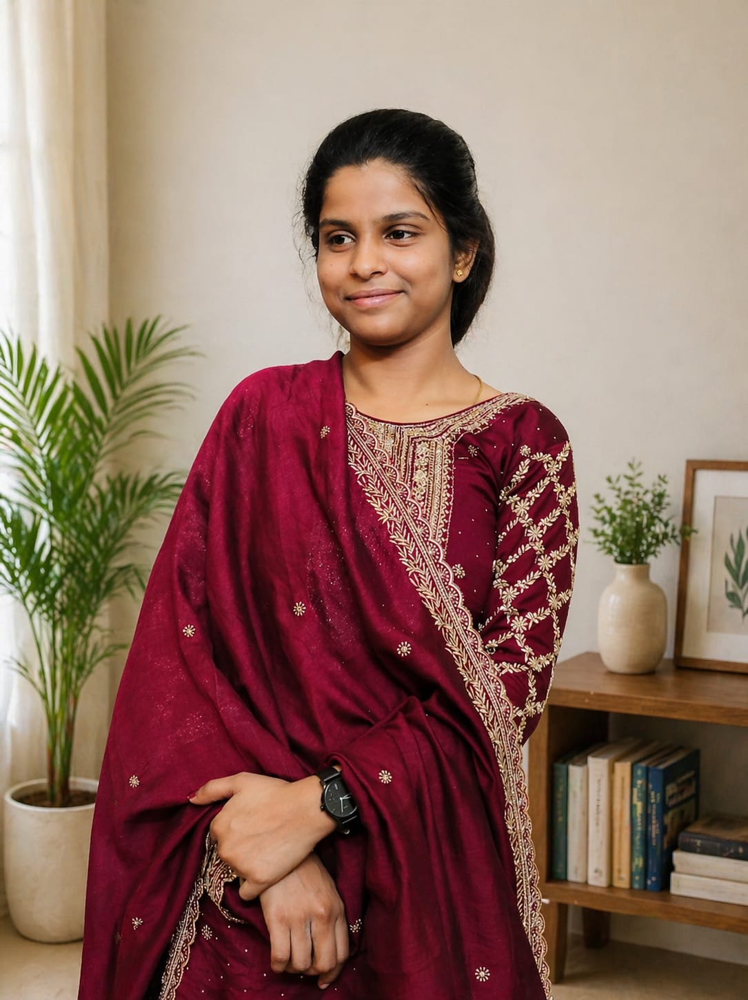

I'm Currently Purshuing 3rd year in Engineering
About Me
I am a passionate and dedicated Electrical and Electronics Engineering (EEE) student with a strong interest in electrical systems, electronics, automation, and emerging technologies. enjoy applying theoretical knowledge to practical projects and continuously expanding my technical skills through hands-on learning and problem-solving. My academic journey has helped me build a solid foundation in circuit design, power systems, control systems, electrical machines, and embedded systems.I am enthusiastic about exploring innovative solutions that contribute to technological advancement and sustainable development. In addition to my technical abilities, I value teamwork, communication, and continuous learning. I am eager to gain industry experience, work on challenging projects, and contribute to organizations where I can grow professionally while making a meaningful impact.
Confederation of Indian Industry (CII) Recognised and Certified as for Foundation Course on Machine Learning and AI.
Saranathan College of Engineering Certified for Website Developer.
Mid level Python course on Corsera
Email: getziyalchristy17@gmail.com
Phone: +91 8438489487